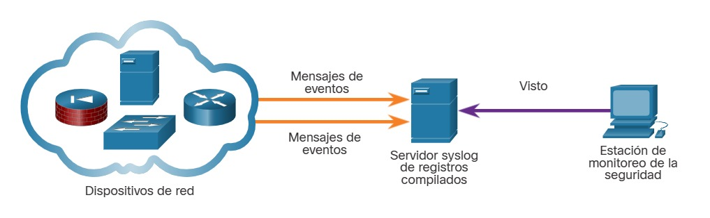
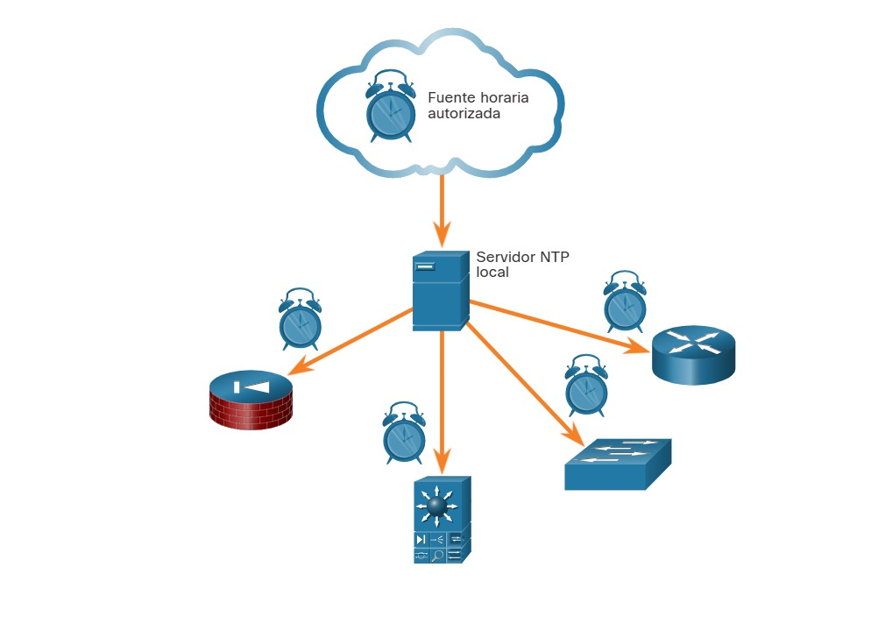

24.1.1 Syslog y NTP
Diversos protocolos que comúnmente aparecen en las redes tienen características que los hacen particularmente interesantes para el monitoreo de la seguridad. Por ejemplo, syslog y el protocolo de tiempo de red (NTP) son esenciales para el trabajo del analista de ciberseguridad.
El estándar syslog se usa para registrar mensajes de eventos provenientes de terminales y dispositivos de red, como se ve en la figura. El estándar habilita un medio independiente del sistema para transmitir, almacenar y analizar mensajes. Muchos tipos de dispositivos de muchos proveedores diferentes pueden utilizar syslog para enviar entradas del registro a servidores centrales que ejecutan un daemon de syslog. Esta centralización de la recopilación de registros ayuda a poner en práctica el monitoreo de la seguridad. Los servidores que ejecutan syslog suelen escuchar en el puerto UDP 514.
Debido a que syslog es tan importante para el monitoreo de la seguridad, los servidores syslog pueden ser un blanco de los agentes de amenaza. Algunos ataques, como los que implican la exfiltración de datos, pueden tomar mucho tiempo para completarse debido a las maneras muy lentas en las que roban datos de la red en secreto. Algunos atacantes pueden intentar ocultar la exfiltración. Atacan los servidores syslog que contienen la información que podría conducir a la detección del ataque. Los Hackers pueden intentar bloquear la transferencia de datos de los clientes de syslog a los servidores, alterar o destruir los datos de registro o alterar el software que crea y transmite los mensajes de registro. La siguiente generación de implementación de syslog, conocida como syslog-ng, ofrece mejoras que pueden ayudar a evitar algunos de los ataques cuyo objetivo es syslog.
Busque en Internet más información sobre syslog-ng.
Syslog

24.1.2 NTP
Los mensajes de syslog suelen tener marca de hora. Esto permite organizar por hora los mensajes de distintas fuentes para brindar un panorama de los procesos de comunicación de red. Dado que los mensajes pueden provenir de muchos dispositivos, es importante que los dispositivos compartan un reloj único. Una forma de lograr esto es que los dispositivos usen el protocolo de tiempo de red (NTP). El NTP utiliza una jerarquía de fuentes horarias autorizadas para compartir información entre dispositivos de la red, como se ve en la figura. De esta manera, es posible enviar al servidor de syslog mensajes de dispositivos que compartan información horaria uniforme. El NTP funciona en el puerto UDP 123.
Dado que los eventos conectados a un ataque pueden dejar rastros en cada dispositivo de la red mientras recorren su camino al sistema de destino, las marcas de tiempo son esenciales para la detección. Los agentes de amenaza pueden intentar atacar la infraestructura de NTP para dañar la información horaria utilizada para correlacionar los eventos registrados de la red. Esto puede servir para ocultar rastros de ataques en curso. Además, se han conocido agentes de amenaza que utilizan sistemas de NTP para dirigir ataques de DDoS aprovechando vulnerabilidades en el software del cliente o del servidor. Mientras que estos ataques no necesariamente dañan los datos de monitoreo de seguridad, pueden interrumpir la disponibilidad de la red.
NTP

24.1.3 DNS
Millones de personas usan el servicio de nombres de dominio (DNS) diariamente. Debido a esto, muchas organizaciones tienen políticas menos rigurosas para protegerse contra amenazas basadas en DNS que las que tienen para protegerse contra otros tipos de ataques. Los atacantes lo saben y, comúnmente, encapsulan distintos protocolos de red en el DNS para evadir los dispositivos de seguridad. Actualmente, muchos tipos de malware usan el DNS. Algunas variantes de malware emplean el DNS para comunicarse con servidores de comando y control (CnC) y para exfiltrar datos de tráfico disfrazados de consultas de DNS normales. Diversos tipos de codificación, tales como Base64, binaria de 8 bits y hexadecimal, pueden usarse para camuflar datos y evadir las medidas básicas de prevención de pérdida de datos (DLP, Data Loss Prevention).
Por ejemplo, el malware podría codificar datos robados como una parte del subdominio de una búsqueda de DNS en un dominio donde el servidor de nombres esté bajo control de un atacante. Una búsqueda de DNS para ‘cadena-larga-de-datos-exfiltrados.ejemplo.com’ remitirá al servidor de nombres ejemplo.com, que podría registrar ‘cadena-larga-de-datos-exfiltrados’ y responder al malware con una respuesta codificada. Este uso del subdominio de DNS se ve en la figura. Los datos exfiltrados son el texto codificado que se ve en el cuadro. El agente de amenaza recoge estos datos codificados, los decodifica y los combina, y obtiene acceso a un archivos de datos completo, por ejemplo, una base de datos de nombres de usuario y contraseñas.
Es probable que la parte de subdominio de tales solicitudes sea mucho más larga que las solicitudes habituales. Los ciberanalistas pueden utilizar la distribución de las longitudes de subdominios dentro de solicitudes de DNS para construir un modelo matemático que describa la normalidad. Este modelo puede resultar útil para comparar sus observaciones e identificar un abuso del proceso de consulta de DNS. Por ejemplo, no sería normal ver un host en la red enviando una consulta a aW4gcGxhY2UgdG8gcHJvdGVjdC.ejemplo.com.
Las consultas de DNS para nombres de dominio generados aleatoriamente o subdominios extremadamente largos que aparecen aleatorios se deben considerar sospechosas, especialmente si su aparición provoca aumentos excesivos de utilización de la red. Los registros de proxy de DNS pueden analizarse para detectar estas condiciones. Otra opción es usar servicios, como el servicio de DNS pasivo Cisco Umbrella, para bloquear solicitudes a dominios sospechosos de CnC y ataque.
Exfiltración de datos mediante DNS

24.1.4 HTTP y HTTPS
El protocolo de transferencia de hipertexto (HTTP) es el protocolo troncal de la red informática mundial (World Wide Web). Sin embargo, toda la información que se transporta mediante HTTP se transmite como texto sin formato desde la computadora de origen hasta el destino en Internet. HTTP no protege los datos de atacantes que deseen alterarlos o interceptarlos, lo que constituye una grave amenaza a la privacidad, identidad y seguridad de la información. Toda la actividad de navegación debe considerarse en riesgo.
Un ataque común de HTTP se denomina inyección de iFrame (inline Frame). La mayoría de las amenazas con base en la web se componen de secuencias de comando de malware plantadas en servidores web. Estos servidores web cargan iFrames para dirigir a los navegadores a servidores infectados. Durante la inyección de iFrames, un agente de amenaza ataca un servidor web y planta código malicioso que genera un iFrame invisible en una página web comúnmente visitada. Cuando se carga el iFrame, se descarga malware, normalmente desde una dirección URL diferente de la de la página web que contiene el código del iFrame. Los servicios de seguridad de red, como el Cisco Web Reputation filtering, pueden detectar cuándo un sitio web intenta enviar contenido desde un sitio web que no es de confianza al host, incluso cuando se envía desde un iFrame, como se muestra en la figura.
Ataque de HTTP por inyección de iFrame

Para hacer frente a la alteración o la interceptación de datos confidenciales, muchas organizaciones comerciales han adoptado HTTPS o implementado políticas exclusivas de HTTPS para proteger a quienes visitan sus sitios web y servicios.
HTTPS agrega una capa de cifrado al protocolo HTTP mediante el uso de Capa de conexión segura (SSL), como se muestra en la figura. Esto hace que los datos HTTP sean ilegibles cuando dejan la computadora de origen y hasta que llegan al servidor. Tenga en cuenta que HTTPS no es un mecanismo de seguridad del servidor web. Solamente protege el tráfico del protocolo HTTP mientras está en tránsito.
Diagrama de protocolo HTTPS

Por desgracia, el tráfico HTTPS encriptado complica el monitoreo de seguridad de la red. Algunos dispositivos de seguridad incluyen la decriptación e inspección de SSL; sin embargo, esto puede traer problemas de procesamiento y privacidad. Además, HTTPS añade complejidad a las capturas de paquetes debido a la mensajería adicional implicada en el establecimiento de la conexión encriptada. Este proceso se resume en la figura y representa una sobrecarga adicional sobre HTTP.
Transacciones HTTPS
24.1.5 Protocolos de correo electrónico
Los protocolos de correo electrónico, como SMTP, POP3 e IMAP, pueden usarse para propagar malware, exfiltrar datos u ofrecer canales a servidores de CnC de malware, como se ve en la figura.
El SMTP envía datos desde un host hacia un servidor de correo y entre servidores de correo. Al igual que DNS y HTTP, es un protocolo común que suele verse saliendo de la red. Dado que hay tanto tráfico de SMTP, no siempre se monitorea. Sin embargo, el malware ha usado el SMTP en el pasado para exfiltrar datos de la red. En el ataque de 2014 a Sony Pictures, uno de los ataques usó SMTP para exfiltrar detalles de usuarios desde hosts atacados a servidores de CnC. Es posible que esta información se haya utilizado para ayudar a desarrollar ataques de recursos protegidos dentro de la red de Sony Pictures. El monitoreo de la seguridad podría revelar este tipo de tráfico según las características del mensaje de correo electrónico.
IMAP y POP3 se usan para descargar mensajes de correo electrónico de un servidor de correo a una computadora host. Por esto, son los protocolos de aplicaciones responsables de traer malware al host. El monitoreo de la seguridad puede identificar cuándo ingresa un archivo adjunto con malware en la red y qué host se infecta primero. Luego, el análisis retrospectivo puede rastrear el comportamiento del malware desde ese momento. De esta manera, puede entenderse mejor el comportamiento del malware y se puede identificar la amenaza. Las herramientas de monitoreo de seguridad pueden también permitir la recuperación de archivos adjuntos infectados para enviarlos a sandbox de malware para su análisis.
Amenazas de protocolo de correo electrónico

24.1.6 ICMP
ICMP tiene muchos usos legítimos, sin embargo, la funcionalidad ICMP también se ha utilizado para crear varios tipos de exploits. ICMP puede emplearse para identificar los hosts de una red o la estructura de una red, y determinar los sistemas operativos utilizados en la red. También puede usarse como vehículo para varios tipos de ataques de DoS.
ICMP también puede usarse para la exfiltración de datos. Debido a la preocupación de que ICMP puede utilizarse para vigilar o denegar un servicio desde el exterior de la red, suele dejarse de lado el tráfico ICMP desde el interior de la red. Sin embargo, algunas variedades de malware utilizan paquetes ICMP diseñados para transferir archivos de hosts infectados a los agentes de amenaza usando este método, que se conoce como tunelización de ICMP.
Busque en Internet una explicación detallada del conocido exploit LOKI.
Nota: El firewall de su institución podría bloquear este sitio.
Existe una serie de herramientas para crear túneles. Busque en Internet Ping Tunnel para explorar una de estas herramientas.